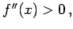

Inhalt Index DeskTop Bronstein

 Geometrie Differentialgeometrie Ebene Kurven Lokale Elemente einer Kurve
Geometrie Differentialgeometrie Ebene Kurven Lokale Elemente einer Kurve


Wenn eine Kurve in der expliziten Form y = f(x) gegeben ist, dann kann für einen kleinen Teil der Kurve, der den Punkt P enthält, angegeben werden, ob die Kurve mit ihrer konkaven Seite nach oben oder nach unten zeigt. Ausgenommen ist der Fall, daß P ein Wendepunkt oder ein singulärer Punkt ist (s. auch ausgezeichnete Kurvenpunkte). Ist die zweite Ableitung  dann zeigt die Kurve mit ihrer konkaven Seite nach oben, d.h. nach der positiven y-Richtung (Punkt P2 in der folgenden Abbildung).
Ist f''(x)<0 (Punkt P1), dann ist die Kurve nach unten konkav. Im Falle f''(x) =0 ist das Problem bei der Betrachtung des Wendepunktes eingehender zu untersuchen.
| Beispiel |
|
Für x > 0 ist die Kurve konkav nach oben, für x < 0 konkav nach unten. |